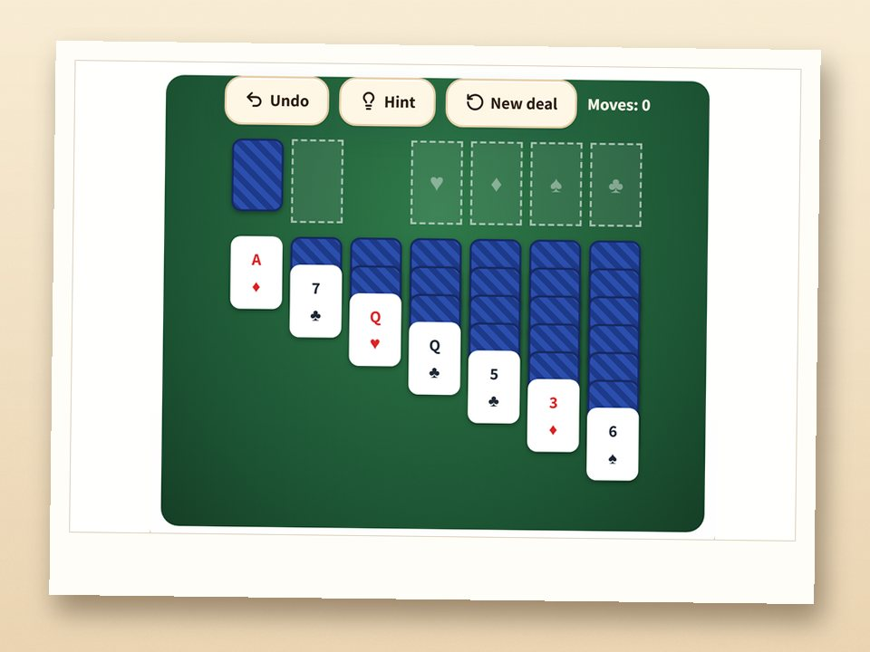

About Dear Old Days

Dear Old Days is a place to remember. We bring together stories about the music, kitchens, television and everyday things of the 1950s to the 1980s, friendly nostalgia quizzes, and a collection of the card games, word games and puzzles many of us grew up with. Everything is free, and easy to read and use on a phone, tablet or computer.
What you will find
- Stories and memories: short reads about music, home life and family television, and a friendly nostalgia quiz.
- 126 games, from Classic Solitaire, Hearts and Checkers to word searches, a jigsaw and a memory game.
- Big, clear buttons and text, a text-size button, and a light or dark display.
- Play at your own pace: many games let you take your time. Some include movement or short memory sequences, so choose the games that suit you.
Free, with no sign-up
You never need an account. Your progress is kept in your browser on this device, not on our servers. We plan to support the site with Google AdSense advertising. Our aim is to keep ads out of the middle of a game. The privacy policy explains local storage, advertising and your privacy choices.
Entertainment, not medicine
Dear Old Days is for enjoyment, not medical care. We do not claim that anything here prevents, treats or cures Alzheimer's disease or dementia. If you are worried about your memory, please speak to your doctor.
Curious what research does and does not say about games and memory? Read our short articles, which name their sources and state their limits.
Who runs Dear Old Days
Dear Old Days is the operator of this website. Questions, ideas or a game that is not working for you: info.dearolddays@gmail.com.
← Back to Dear Old Days · Privacy policy · Photo credits · Cookie settings